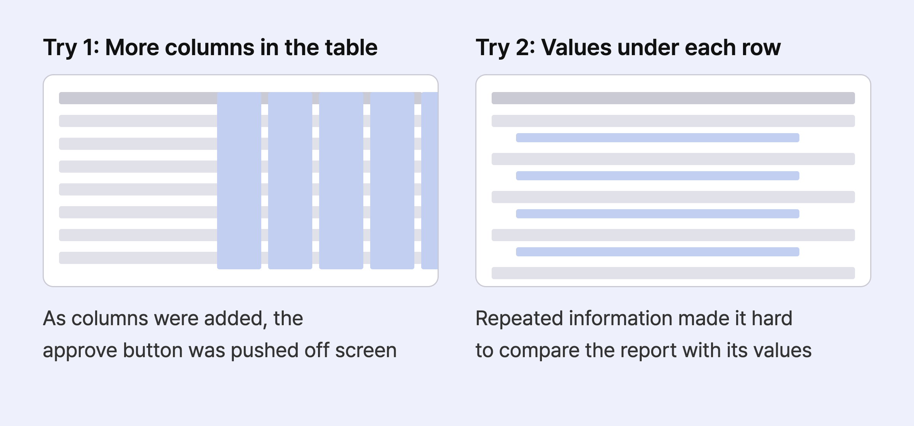
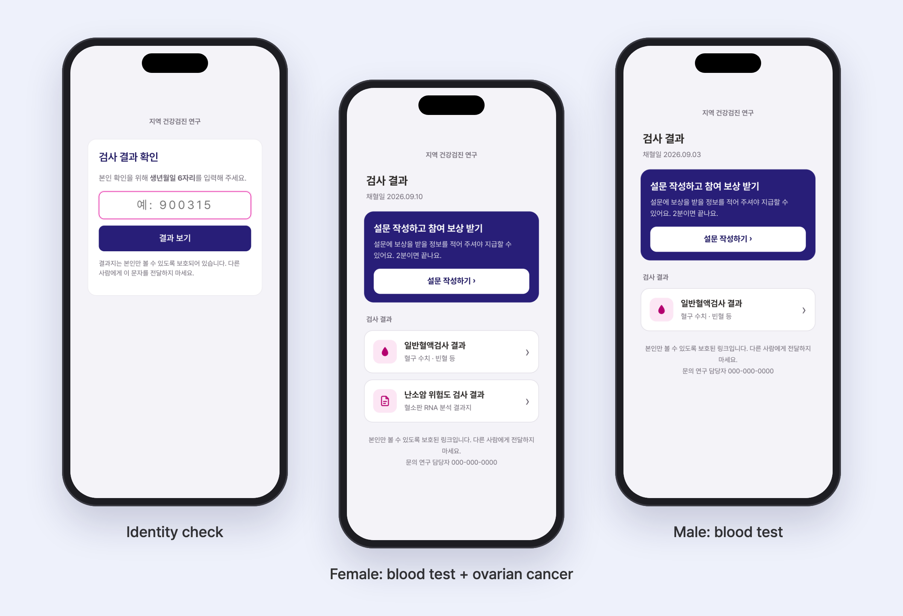
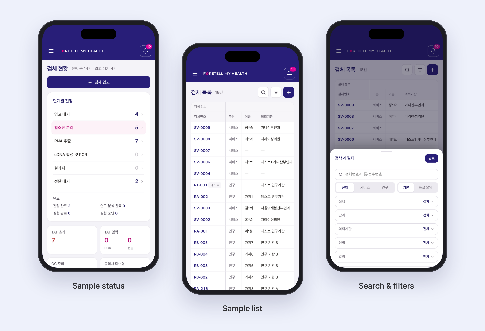

Foretell Lab Portal: Bringing Lab Operations into One Portal
Product Design + Internal Tool
Overview
Brief
I designed and built a web portal that brings test data and report workflows into one place, replacing a process spread across spreadsheets, scripts, and design tools. The portal reached initial operational use in approximately two weeks.
Challenge
Testing couldn't pause during the transition. The portal needed to support the operations team's work immediately while allowing the lab team to transition without disrupting familiar workflows.
Duration
Sep 30, 2026 - Present (in production)
Role
Product Designer — End-to-end UX/UI design and AI-assisted implementation
Methods
- Workflow Analysis
- User Feedback
- Comparative Prototyping
- Iterative Design
Tools
- Claude Code
- Python (FastAPI)
- PostgreSQL
- Notion
Problem
Each step of the testing workflow lived in a different tool
Stakeholders
- Lab team — receives samples and records lab data.
- Operations team — tracks testing progress, and prepares and delivers reports.
- Research participants — view their test results.
Key Problems
A fragmented workflow with repeated manual steps. Getting from data entry to report delivery meant switching tools and re-entering or reformatting the same information. Scripts automated parts of the process, but people still had to connect the steps.
Little visibility or control. It was hard to see each sample's status and deadline, and there was no edit history or access control.
Approach
Three principles guided the design
I found problems by doing the report work myself, and gathered input from an operations team member with lab experience, the data management team and the lab team. I set the direction around existing workflows, then used test data to check and refine the implemented screens.
One place for the work
Checks and record-keeping that were spread across tools now happen in one portal.
Keep familiar workflows
The familiar table stays; new features reduce repetitive entry.
Fit the person and the device
Each person sees only the results that apply to them, and layouts adapt to the screen.
Decision 1
Bulk entry inside the familiar table, not a new screen
Lab staff had to enter the same values tube by tube. I built two approaches with test data, compared them with an operations team member who has lab experience, and chose to extend the existing table.

Rejected alternative
Dedicated batch entry screen
Two screens for the same job would force people to decide which one to use.
Final design: bulk entry in the existing table
- Reuse the existing selection pattern — the same selection as the sample list and reports, so there's nothing new to learn.
- Apply shared values at once — one entry fills many tubes. Defaults are based on about 600 past entries.
- Leave dates to the user — dates aren't pre-filled, so a wrong date can't slip in unnoticed. A "Today" button keeps entry quick.

① Select tubes

② Enter shared values
Decision 2
Showing the report and its values side by side
Reports are hard to correct once delivered, so the check before approval matters most. Reviewers compare the report with its values on one screen. If a value changes after the report is generated, the report must be regenerated before it can be approved.
Earlier attempts

Structure redrawn; the original screens weren't saved
Final design: report review screen

Report review screen (sample report, mock data)
Participant report pre-send review

The same layout, reused to review participant reports before sending.
Decision 3
Making testing progress visible at a glance
Progress was tracked on a kanban board. Someone moved each card by hand whenever a stage changed, and checked each sample's deadline separately.
The portal now tallies samples by stage and calculates deadlines, so the operations team can see which samples need attention first. Stages update as lab data comes in, and every sample's deadline and delay status appears on one screen.
Before: kanban board

Cards moved by hand at every stage change, with deadlines checked separately
After: testing progress dashboard

Stages update from lab data, with every sample's deadline and delay status on one screen
"Once the lab data is in, it just moves to the next stage, so tracking got so much easier."
— Operations team member
Decision 4
Showing participants only the results that apply to them
Which results a research participant receives depends on their sex and what they consented to receive. I designed the participant results screen around issues I ran into while preparing and delivering reports.
Issues found in operations, and how the design responded
- How do we keep results private? — Results open only after identity verification.
- How do we show different results to different people? — Results are filtered by sex and consent.
- What should appear for results that aren't ready? — Nothing. Pending results are left off the screen.
- What do participants actually need to see? — The study name and a contact, instead of the company logo.

Decision 5
Redesigning wide tables for mobile
Instead of shrinking the tables, I reordered and reshaped the information to fit a phone screen.
- Restructure for the screen — progress shows one stage per row, and the sample list keeps only key information.
- Search and filters in a bottom sheet — both share one bottom sheet, so people can set conditions while the list stays in view.

Details
Designing for edge cases in daily operations
Preventing overwrites
If two people edit the same field, the portal flags the conflict instead of overwriting the earlier change.

One date format
Date fields that rendered differently in each browser now use a single format.

Edit history
The portal records who changed which sample's values, with the values before and after.

Reviewing corrections
Before a corrected report is sent, a confirmation summarizes the changed fields, the reason and the number of reports.

Impact
Connecting the report workflow in one portal
Report generation, review, approval and delivery prep, which used to span several tools and scripts, now happen in one portal.
Reflection
What I learned
Compare real options, then keep asking
I built two data-entry approaches and compared them with an operations colleague who had lab experience, then refined the design based on issues found during operations.
Data accuracy is part of the experience
A results screen is only trustworthy if the values and scores behind it are correct. Verifying the data turned out to matter as much as designing the screen.
Build fast with AI, verify it myself
AI let me implement designs quickly, but the design decisions were mine. I checked how each change behaved on real screens before iterating.